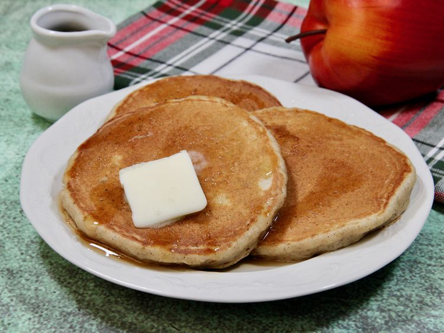

Pancakes With Applesauce

Pancakes that are so thick that you almost have to use a knife to eat with,
and sauce so sweet it tastes like cotton candy and the best bread in the world!
This recipe consists of dry pancake mix, ground cinnamon, large eggs,
applesauce, lemon juice, and milk.
Ingrediants:
- 2 cups dry pancake mix
- 1 teaspoon ground cinnamon
- 2 large eggs
- 1 cup applesauce
- 1 teaspoon lemon juice
- 1/2 cup of milk
Steps:
- Stir pancake mix and cinnamon together in a large bowl;
make a well in the center and add eggs, applesauce,
lemon juice,
and milk. Stir mixture until smooth
- Heat a lightly oiled griddle or frying pan over medium high heat.
Pour or scoop the batter onto the griddle,
using approximately
1/4 cup for each pancake; cook until bubbles form and the edges are dry, 1 to 2 minutes.
Flip and cook until browned on the other side. Repeat with remaining batter.